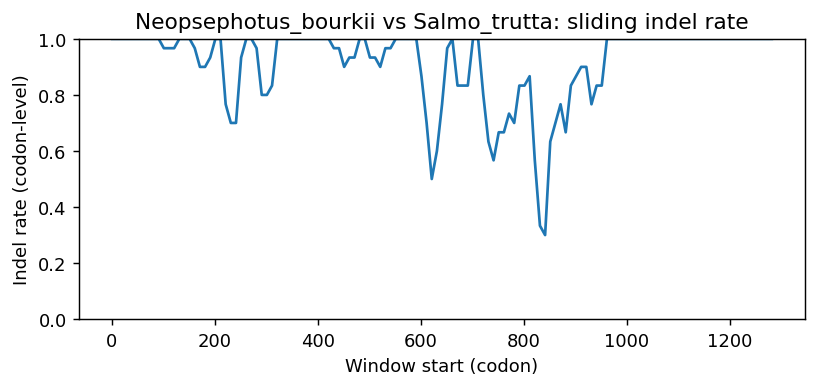

Ortholog Divergence Report
Input: RIPPLY3.valid.longest.fa · N sequences: 388 · Aligned length: 1285 codons
Reference: Neopsephotus_bourkii
Quick risk overview
- LOW: 0
- INTERMEDIATE: 0
- HIGH: 75078


Composition & complexity per sequence
Saved as per_sequence_composition.csv. High low-complexity or repeat content can reduce BLAST sensitivity due to soft masking.
| id | GC | GC skew | CpG dens. | AA LCR frac | NT repeat frac | AA len | CDS len |
|---|---|---|---|---|---|---|---|
| Neopsephotus_bourkii | 0.50498 | -0.03448 | 0.01746 | 0.27612 | 0.70398 | 134 | 402 |
| Apteryx_rowi | 0.46819 | 0.01087 | 0.0051 | 0.12214 | 0.66158 | 131 | 393 |
| Balearica_regulorum_gibbericeps | 0.53385 | 0.03415 | 0.04439 | 0.23438 | 0.64062 | 128 | 384 |
| Rhinopithecus_bieti | 0.62745 | 0.03472 | 0.0655 | 0.37908 | 0.67756 | 153 | 459 |
| Chrysemys_picta_bellii | 0.44784 | -0.01136 | 0.01276 | 0.09924 | 0.75318 | 131 | 393 |
| Polypterus_senegalus | 0.45131 | 0.14523 | 0.01876 | 0.10674 | 0.75655 | 178 | 534 |
| Scleropages_formosus | 0.59453 | -0.01255 | 0.05237 | 0.14925 | 0.62687 | 134 | 402 |
| Grus_americana | 0.51654 | 0.03448 | 0.03316 | 0.09924 | 0.66667 | 131 | 393 |
| Panthera_leo | 0.59715 | 0.01493 | 0.06071 | 0.29947 | 0.59893 | 187 | 561 |
| Aythya_fuligula | 0.46819 | -0.01087 | 0.01531 | 0.12214 | 0.73537 | 131 | 393 |
| Meles_meles | 0.5918 | 0.01205 | 0.05357 | 0.26203 | 0.62567 | 187 | 561 |
| Oryx_dammah | 0.65736 | 0.04249 | 0.0709 | 0.36313 | 0.68156 | 179 | 537 |
| Dama_dama | 0.65549 | 0.02841 | 0.0653 | 0.34078 | 0.70764 | 179 | 537 |
| Haliaeetus_albicilla | 0.41473 | 0.04673 | 0.01167 | 0.18605 | 0.72481 | 86 | 258 |
| Tympanuchus_pallidicinctus | 0.4631 | -0.01099 | 0.00765 | 0.12214 | 0.64122 | 131 | 393 |
| Psammomys_obesus | 0.63946 | 0.07092 | 0.05909 | 0.4966 | 0.56916 | 147 | 441 |
| Chelonoidis_abingdonii | 0.45 | -0.02646 | 0.00716 | 0.10714 | 0.72381 | 140 | 420 |
| Corvus_hawaiiensis | 0.53216 | 0.06227 | 0.01367 | 0.09942 | 0.65692 | 171 | 513 |
| Loxodonta_africana | 0.60349 | 0.09747 | 0.0524 | 0.30719 | 0.60349 | 153 | 459 |
| Nycticebus_coucang | 0.58889 | 0.0 | 0.03896 | 0.33333 | 0.62037 | 180 | 540 |
| Carassius_auratus | 0.54713 | 0.11765 | 0.06912 | 0.12414 | 0.77931 | 145 | 435 |
| Microtus_ochrogaster | 0.59649 | 0.07353 | 0.04396 | 0.23026 | 0.5943 | 152 | 456 |
| Alligator_mississippiensis | 0.41221 | 0.02469 | 0.00765 | 0.18321 | 0.71756 | 131 | 393 |
| Falco_cherrug | 0.51825 | 0.02347 | 0.01463 | 0.20438 | 0.65937 | 137 | 411 |
| Triplophysa_dalaica | 0.47 | 0.06383 | 0.0301 | 0.16 | 0.78 | 100 | 300 |
| Pseudopodoces_humilis | 0.5981 | 0.01911 | 0.06489 | 0.38286 | 0.65905 | 175 | 525 |
| Anser_cygnoides | 0.46565 | 0.01639 | 0.01276 | 0.12214 | 0.74555 | 131 | 393 |
| Conger_conger | 0.5 | 0.10417 | 0.01828 | 0.125 | 0.65365 | 128 | 384 |
| Mauremys_reevesii | 0.45293 | -0.01124 | 0.01276 | 0.10687 | 0.71756 | 131 | 393 |
| Sapajus_apella | 0.61392 | 0.05155 | 0.06131 | 0.1962 | 0.6097 | 158 | 474 |
| Lutra_lutra | 0.60071 | 0.01484 | 0.0625 | 0.25668 | 0.58289 | 187 | 561 |
| Microcebus_murinus | 0.63002 | 0.00277 | 0.05769 | 0.3822 | 0.64747 | 191 | 573 |
| Hypanus_sabinus | 0.53472 | 0.09091 | 0.04408 | 0.15972 | 0.69213 | 144 | 432 |
| Canis_lupus_dingo | 0.59238 | 0.08682 | 0.04962 | 0.17714 | 0.63619 | 175 | 525 |
| Carcharodon_carcharias | 0.52246 | 0.05882 | 0.0237 | 0.14894 | 0.70449 | 141 | 423 |
| Osmerus_eperlanus | 0.46667 | -0.0936 | 0.01843 | 0.13103 | 0.71264 | 145 | 435 |
| Hyla_sarda | 0.47743 | 0.00364 | 0.0313 | 0.125 | 0.73611 | 192 | 576 |
| Gorilla_gorilla_gorilla | 0.62105 | 0.0565 | 0.05097 | 0.30526 | 0.64737 | 190 | 570 |
| Lagenorhynchus_obliquidens | 0.62821 | 0.00292 | 0.06239 | 0.28571 | 0.69048 | 182 | 546 |
| Eurypyga_helias | 0.49873 | -0.0102 | 0.01276 | 0.22137 | 0.58779 | 131 | 393 |
| Bombina_bombina | 0.41401 | 0.0359 | 0.01064 | 0.12739 | 0.67516 | 157 | 471 |
| Carassius_gibelio | 0.54713 | 0.11765 | 0.06682 | 0.12414 | 0.76552 | 145 | 435 |
| Eumetopias_jubatus | 0.57875 | 0.05696 | 0.04954 | 0.2967 | 0.65385 | 182 | 546 |
| Chlorocebus_sabaeus | 0.63181 | 0.02069 | 0.07205 | 0.37908 | 0.67102 | 153 | 459 |
| Lemur_catta | 0.60558 | 0.03746 | 0.0507 | 0.29319 | 0.64223 | 191 | 573 |
| Tyto_alba | 0.54229 | 0.01835 | 0.03741 | 0.27612 | 0.61692 | 134 | 402 |
| Indicator_indicator | 0.52278 | 0.06422 | 0.03846 | 0.2446 | 0.65468 | 139 | 417 |
| Pogoniulus_pusillus | 0.52099 | 0.05213 | 0.03465 | 0.34074 | 0.64691 | 135 | 405 |
| Phodopus_roborovskii | 0.5873 | 0.05019 | 0.04545 | 0.31293 | 0.68707 | 147 | 441 |
| Ursus_arctos | 0.59537 | 0.07186 | 0.05357 | 0.28877 | 0.61854 | 187 | 561 |
| Sebastes_umbrosus | 0.58333 | -0.02703 | 0.05418 | 0.22973 | 0.77928 | 148 | 444 |
| Amblyraja_radiata | 0.52573 | 0.11489 | 0.04709 | 0.12752 | 0.73378 | 149 | 447 |
| Melanerpes_formicivorus | 0.4951 | 0.0495 | 0.02703 | 0.28676 | 0.69853 | 136 | 408 |
| Falco_peregrinus | 0.51825 | 0.02347 | 0.01463 | 0.20438 | 0.65937 | 137 | 411 |
| Cervus_canadensis | 0.68362 | -0.10744 | 0.08258 | 0.34237 | 0.63164 | 295 | 885 |
| Ictalurus_furcatus | 0.50524 | -0.15353 | 0.03151 | 0.10063 | 0.77778 | 159 | 477 |
| Oncorhynchus_mykiss | 0.47523 | 0.06161 | 0.00677 | 0.10811 | 0.78378 | 148 | 444 |
| Saccopteryx_bilineata | 0.59927 | 0.04559 | 0.04197 | 0.14208 | 0.60656 | 183 | 549 |
| Falco_biarmicus | 0.51825 | 0.02347 | 0.01463 | 0.20438 | 0.65937 | 137 | 411 |
| Chrysochloris_asiatica | 0.5461 | 0.14286 | 0.02842 | 0.17553 | 0.73936 | 188 | 564 |
| Camelus_ferus | 0.61628 | 0.09434 | 0.06796 | 0.30233 | 0.64922 | 172 | 516 |
| Gavia_stellata | 0.53086 | 0.04186 | 0.04703 | 0.34815 | 0.63457 | 135 | 405 |
| Dromaius_novaehollandiae | 0.4677 | 0.03867 | 0.00777 | 0.10853 | 0.69251 | 129 | 387 |
| Rousettus_aegyptiacus | 0.64948 | 0.10582 | 0.07573 | 0.40722 | 0.71821 | 194 | 582 |
| Pterocles_gutturalis | 0.4974 | 0.00524 | 0.02089 | 0.25 | 0.71094 | 128 | 384 |
| Rhinopithecus_roxellana | 0.62527 | 0.03136 | 0.0655 | 0.37908 | 0.67756 | 153 | 459 |
| Oncorhynchus_tshawytscha | 0.48649 | 0.0 | 0.01806 | 0.14189 | 0.77027 | 148 | 444 |
| Dipodomys_spectabilis | 0.61181 | 0.0069 | 0.05074 | 0.27215 | 0.59705 | 158 | 474 |
| Marmota_marmota_marmota | 0.58681 | 0.10651 | 0.04 | 0.27083 | 0.67882 | 192 | 576 |
| Myxocyprinus_asiaticus | 0.46939 | 0.15942 | 0.03413 | 0.12245 | 0.82993 | 98 | 294 |
| Athene_cunicularia | 0.52696 | 0.02326 | 0.03931 | 0.40441 | 0.67892 | 136 | 408 |
| Ochotona_princeps | 0.68704 | 0.05121 | 0.07978 | 0.36667 | 0.6963 | 180 | 540 |
| Bos_mutus | 0.6697 | 0.02262 | 0.09105 | 0.19091 | 0.70606 | 220 | 660 |
| Accipiter_gentilis | 0.52968 | -0.06897 | 0.02059 | 0.43151 | 0.74201 | 146 | 438 |
| Semicossyphus_pulcher | 0.56164 | 0.0 | 0.0389 | 0.15753 | 0.81279 | 146 | 438 |
| Astyanax_mexicanus | 0.49109 | 0.03627 | 0.01531 | 0.17557 | 0.8117 | 131 | 393 |
| Cyrtonyx_montezumae | 0.4641 | -0.06077 | 0.00771 | 0.11538 | 0.67436 | 130 | 390 |
| Chanodichthys_erythropterus | 0.53205 | 0.09639 | 0.04502 | 0.15385 | 0.67949 | 104 | 312 |
| Mus_caroli | 0.58333 | 0.03759 | 0.04396 | 0.29605 | 0.64912 | 152 | 456 |
| Calypte_anna | 0.41473 | 0.02804 | 0.01167 | 0.15116 | 0.63178 | 86 | 258 |
| Felis_catus | 0.54326 | 0.01639 | 0.04968 | 0.25954 | 0.60305 | 262 | 786 |
| Ranitomeya_imitator | 0.49567 | 0.0131 | 0.0282 | 0.20779 | 0.71429 | 154 | 462 |
| Leucoraja_erinaceus | 0.52222 | 0.11489 | 0.04454 | 0.14 | 0.77111 | 150 | 450 |
| Rissa_tridactyla | 0.49191 | -0.04605 | 0.01621 | 0.1699 | 0.68932 | 206 | 618 |
| Pangasianodon_hypophthalmus | 0.47475 | -0.04255 | 0.00506 | 0.17424 | 0.76768 | 132 | 396 |
| Balaenoptera_ricei | 0.62088 | -0.00295 | 0.05321 | 0.35165 | 0.66484 | 182 | 546 |
| Vidua_chalybeata | 0.56757 | 0.0582 | 0.0241 | 0.10811 | 0.59459 | 111 | 333 |
| Spea_bombifrons | 0.50511 | -0.04453 | 0.03484 | 0.11656 | 0.70143 | 163 | 489 |
| Coturnix_japonica | 0.47328 | 0.01075 | 0.00255 | 0.12214 | 0.64631 | 131 | 393 |
| Megalobrama_amblycephala | 0.52427 | 0.12346 | 0.04221 | 0.17476 | 0.75081 | 103 | 309 |
| Rhinolophus_ferrumequinum | 0.62724 | 0.06857 | 0.08259 | 0.36022 | 0.63262 | 186 | 558 |
| Sinocyclocheilus_grahami | 0.54125 | 0.10976 | 0.03974 | 0.14851 | 0.75908 | 101 | 303 |
| Enhydra_lutris_kenyoni | 0.62401 | 0.01266 | 0.06962 | 0.12322 | 0.61453 | 211 | 633 |
| Melopsittacus_undulatus | 0.50249 | -0.0198 | 0.02244 | 0.09701 | 0.71393 | 134 | 402 |
| Apus_apus | 0.50645 | 0.03273 | 0.04059 | 0.1547 | 0.74954 | 181 | 543 |
| Vulpes_lagopus | 0.59238 | 0.08039 | 0.05153 | 0.17714 | 0.65714 | 175 | 525 |
| Opisthocomus_hoazin | 0.5175 | 0.02941 | 0.0503 | 0.20091 | 0.71994 | 219 | 657 |
| Salmo_trutta | 0.47523 | 0.07109 | 0.00677 | 0.12838 | 0.77928 | 148 | 444 |
| Pipistrellus_kuhlii | 0.72613 | 0.05211 | 0.08845 | 0.4973 | 0.6018 | 185 | 555 |
| Camelus_dromedarius | 0.61434 | 0.08517 | 0.06602 | 0.30233 | 0.66085 | 172 | 516 |
| Leptosomus_discolor | 0.51042 | -0.05102 | 0.02872 | 0.20312 | 0.57552 | 128 | 384 |
| Dipodomys_merriami | 0.61635 | 0.0068 | 0.05252 | 0.27673 | 0.60587 | 159 | 477 |
| Paramormyrops_kingsleyae | 0.56501 | -0.02092 | 0.05213 | 0.2695 | 0.7305 | 141 | 423 |
| Pezoporus_flaviventris | 0.39827 | -0.04348 | 0.0087 | 0.18182 | 0.66667 | 77 | 231 |
| Tachysurus_vachellii | 0.46154 | -0.04444 | 0.01028 | 0.16923 | 0.73846 | 130 | 390 |
| Dryobates_pubescens | 0.51691 | 0.05607 | 0.03148 | 0.27536 | 0.7029 | 138 | 414 |
| Myodes_glareolus | 0.59059 | 0.15691 | 0.02909 | 0.21577 | 0.73997 | 241 | 723 |
| Phyllostomus_hastatus | 0.67614 | 0.05322 | 0.09677 | 0.36932 | 0.65152 | 176 | 528 |
| Eulemur_rufifrons | 0.60993 | 0.02326 | 0.04973 | 0.28191 | 0.61879 | 188 | 564 |
| Prionailurus_viverrinus | 0.59715 | 0.0209 | 0.05714 | 0.29412 | 0.6025 | 187 | 561 |
| Anguilla_rostrata | 0.48431 | 0.06073 | 0.01768 | 0.12353 | 0.66275 | 170 | 510 |
| Mustela_lutreola | 0.60071 | 0.0089 | 0.06071 | 0.26203 | 0.65241 | 187 | 561 |
| Scyliorhinus_canicula | 0.53717 | 0.07143 | 0.02404 | 0.09353 | 0.63549 | 139 | 417 |
| Pongo_pygmaeus | 0.62281 | 0.05915 | 0.05272 | 0.32105 | 0.6386 | 190 | 570 |
| Bos_indicus_x_Bos_taurus | 0.64991 | 0.02006 | 0.06716 | 0.31844 | 0.6946 | 179 | 537 |
| Erpetoichthys_calabaricus | 0.44944 | 0.11667 | 0.01876 | 0.10674 | 0.76592 | 178 | 534 |
| Paramisgurnus_dabryanus | 0.48742 | 0.01935 | 0.05363 | 0.17925 | 0.76101 | 106 | 318 |
| Molossus_molossus | 0.60145 | 0.01807 | 0.06171 | 0.22826 | 0.66486 | 184 | 552 |
| Peromyscus_californicus_insignis | 0.61077 | 0.07797 | 0.04772 | 0.3913 | 0.60455 | 161 | 483 |
| Puntigrus_tetrazona | 0.58844 | 0.06358 | 0.06143 | 0.15306 | 0.7551 | 98 | 294 |
| Sinocyclocheilus_anshuiensis | 0.52564 | 0.17073 | 0.0418 | 0.19231 | 0.70513 | 104 | 312 |
| Brienomyrus_brachyistius | 0.54436 | -0.04846 | 0.04327 | 0.15827 | 0.72662 | 139 | 417 |
| Dendropsophus_ebraccatus | 0.45805 | 0.0297 | 0.01591 | 0.17007 | 0.66667 | 147 | 441 |
| Gopherus_evgoodei | 0.45714 | -0.02083 | 0.01193 | 0.10714 | 0.72857 | 140 | 420 |
| Arvicanthis_niloticus | 0.61184 | 0.04659 | 0.05934 | 0.19737 | 0.57237 | 152 | 456 |
| Dipodomys_ordii | 0.53719 | 0.02564 | 0.01657 | 0.13223 | 0.57851 | 121 | 363 |
| Castor_canadensis | 0.60905 | -0.02703 | 0.04742 | 0.17901 | 0.60494 | 162 | 486 |
| Zalophus_californianus | 0.57692 | 0.05397 | 0.04771 | 0.2967 | 0.65934 | 182 | 546 |
| Catharus_ustulatus | 0.53906 | 0.04348 | 0.0235 | 0.0 | 0.57812 | 128 | 384 |
| Cavia_porcellus | 0.58392 | 0.03644 | 0.04502 | 0.14894 | 0.70449 | 141 | 423 |
| Myiozetetes_cayanensis | 0.64706 | 0.07273 | 0.07662 | 0.24118 | 0.58627 | 170 | 510 |
| Lagopus_leucura | 0.46565 | -0.00546 | 0.00765 | 0.12214 | 0.67176 | 131 | 393 |
| Bufo_gargarizans | 0.48171 | 0.04641 | 0.02037 | 0.12805 | 0.75813 | 164 | 492 |
| Corvus_moneduloides | 0.53606 | 0.06182 | 0.01758 | 0.09942 | 0.64717 | 171 | 513 |
| Chionomys_nivalis | 0.61355 | 0.15821 | 0.04404 | 0.18681 | 0.64469 | 182 | 546 |
| Neomonachus_schauinslandi | 0.58974 | 0.04969 | 0.05321 | 0.26923 | 0.66484 | 182 | 546 |
| Chelonia_mydas | 0.46272 | -0.01422 | 0.00659 | 0.10526 | 0.72807 | 152 | 456 |
| Sciurus_carolinensis | 0.60094 | 0.08854 | 0.05486 | 0.38028 | 0.70736 | 213 | 639 |
| Hyaena_hyaena | 0.59465 | 0.02422 | 0.05773 | 0.23457 | 0.66255 | 162 | 486 |
| Anas_platyrhynchos | 0.39922 | 0.00971 | 0.00389 | 0.18605 | 0.75969 | 86 | 258 |
| Condylura_cristata | 0.65598 | 0.04235 | 0.08779 | 0.28205 | 0.60043 | 156 | 468 |
| Lathamus_discolor | 0.40171 | -0.02128 | 0.01288 | 0.20513 | 0.67949 | 78 | 234 |
| Lepisosteus_oculatus | 0.5641 | 0.05594 | 0.06719 | 0.14201 | 0.74753 | 169 | 507 |
| Danio_rerio | 0.58788 | 0.05155 | 0.05471 | 0.16364 | 0.80606 | 110 | 330 |
| Peromyscus_eremicus | 0.61453 | 0.09697 | 0.04851 | 0.26816 | 0.6108 | 179 | 537 |
| Denticeps_clupeoides | 0.57333 | 0.07907 | 0.06417 | 0.256 | 0.70133 | 125 | 375 |
| Callorhinchus_milii | 0.59753 | 0.10744 | 0.03713 | 0.13333 | 0.77531 | 135 | 405 |
| Columba_livia | 0.5359 | -0.00478 | 0.04627 | 0.39231 | 0.60769 | 130 | 390 |
| Kogia_breviceps | 0.61355 | 0.00299 | 0.05688 | 0.35714 | 0.61905 | 182 | 546 |
| Mirounga_angustirostris | 0.59158 | 0.04644 | 0.05505 | 0.26923 | 0.66484 | 182 | 546 |
| Equus_asinus | 0.61722 | 0.02842 | 0.05591 | 0.16746 | 0.65391 | 209 | 627 |
| Caloenas_nicobarica | 0.53181 | -0.00478 | 0.04592 | 0.36641 | 0.5369 | 131 | 393 |
| Pan_paniscus | 0.61491 | 0.05724 | 0.05602 | 0.36025 | 0.66667 | 161 | 483 |
| Mesoplodon_densirostris | 0.60256 | -0.0152 | 0.04404 | 0.24176 | 0.65751 | 182 | 546 |
| Mustela_nigripes | 0.60071 | 0.01484 | 0.05893 | 0.24599 | 0.64706 | 187 | 561 |
| Tauraco_erythrolophus | 0.51128 | 0.0098 | 0.03015 | 0.1203 | 0.6391 | 133 | 399 |
| Mustela_erminea | 0.62579 | 0.00503 | 0.07087 | 0.12264 | 0.61321 | 212 | 636 |
| Pseudorca_crassidens | 0.63004 | 0.00581 | 0.06422 | 0.28571 | 0.66484 | 182 | 546 |
| Chiloscyllium_plagiosum | 0.52315 | 0.0708 | 0.0464 | 0.13194 | 0.72917 | 144 | 432 |
| Hemiscyllium_ocellatum | 0.54219 | 0.07393 | 0.0444 | 0.20886 | 0.70042 | 158 | 474 |
| Meriones_unguiculatus | 0.60819 | -0.14904 | 0.05124 | 0.35965 | 0.66959 | 228 | 684 |
| Apteryx_mantelli | 0.47074 | 0.01622 | 0.0051 | 0.12214 | 0.66158 | 131 | 393 |
| Propithecus_coquereli | 0.61295 | 0.08763 | 0.06013 | 0.27962 | 0.64771 | 211 | 633 |
| Callithrix_jacchus | 0.61392 | -0.00344 | 0.06131 | 0.35443 | 0.67511 | 158 | 474 |
| Pimephales_promelas | 0.54808 | 0.08772 | 0.05145 | 0.17308 | 0.76282 | 104 | 312 |
| Carassius_carassius | 0.55251 | 0.1157 | 0.06407 | 0.13014 | 0.76712 | 146 | 438 |
| Labrus_bergylta | 0.51029 | 0.04839 | 0.02062 | 0.25309 | 0.78189 | 162 | 486 |
| Scophthalmus_maximus | 0.55408 | -0.00398 | 0.03982 | 0.13245 | 0.7351 | 151 | 453 |
| Grammomys_surdaster | 0.60222 | 0.04797 | 0.04677 | 0.2 | 0.56444 | 150 | 450 |
| Heptranchias_perlo | 0.53196 | 0.03863 | 0.03661 | 0.13014 | 0.76484 | 146 | 438 |
| Acomys_russatus | 0.59454 | 0.09508 | 0.03516 | 0.22222 | 0.61209 | 171 | 513 |
| Pelodiscus_sinensis | 0.45038 | 0.02825 | 0.00765 | 0.10687 | 0.71247 | 131 | 393 |
| Oryctolagus_cuniculus | 0.67204 | 0.07733 | 0.06822 | 0.16129 | 0.6147 | 186 | 558 |
| Phocoena_phocoena | 0.62756 | 0.00297 | 0.05784 | 0.26816 | 0.60894 | 179 | 537 |
| Corapipo_altera | 0.52696 | -0.04186 | 0.0172 | 0.13235 | 0.64706 | 136 | 408 |
| Heterodontus_francisci | 0.5274 | 0.06494 | 0.03661 | 0.21233 | 0.74658 | 146 | 438 |
| Rhincodon_typus | 0.51748 | 0.05405 | 0.02103 | 0.11189 | 0.669 | 143 | 429 |
| Suricata_suricatta | 0.62247 | 0.01183 | 0.06089 | 0.25967 | 0.62615 | 181 | 543 |
| Corvus_cornix_cornix | 0.53801 | 0.05797 | 0.01758 | 0.09942 | 0.64133 | 171 | 513 |
| Orcinus_orca | 0.62821 | 0.00292 | 0.06055 | 0.28571 | 0.67582 | 182 | 546 |
| Mesocricetus_auratus | 0.60486 | 0.06569 | 0.05088 | 0.19868 | 0.64459 | 151 | 453 |
| Fukomys_damarensis | 0.60129 | -0.00535 | 0.05579 | 0.17042 | 0.67631 | 311 | 933 |
| Sorex_araneus | 0.66453 | 0.06752 | 0.06424 | 0.28205 | 0.69231 | 156 | 468 |
| Alligator_sinensis | 0.41667 | 0.01818 | 0.00506 | 0.18182 | 0.73737 | 132 | 396 |
| Pteronotus_mesoamericanus | 0.70395 | 0.00312 | 0.11429 | 0.30263 | 0.63158 | 152 | 456 |
| Malaclemys_terrapin_pileata | 0.45547 | -0.01676 | 0.01531 | 0.10687 | 0.75318 | 131 | 393 |
| Neofelis_nebulosa | 0.52799 | 0.03133 | 0.04331 | 0.21374 | 0.6056 | 262 | 786 |
| Delphinapterus_leucas | 0.62637 | 0.0117 | 0.05688 | 0.28571 | 0.66117 | 182 | 546 |
| Rhea_pennata | 0.4899 | 0.01031 | 0.01772 | 0.10606 | 0.67677 | 132 | 396 |
| Aphelocoma_coerulescens | 0.46899 | 0.05785 | 0.00778 | 0.19767 | 0.75969 | 86 | 258 |
| Embiotoca_jacksoni | 0.60513 | 0.0565 | 0.05137 | 0.45128 | 0.82222 | 195 | 585 |
| Pygocentrus_nattereri | 0.54237 | -0.09375 | 0.03116 | 0.12712 | 0.68927 | 118 | 354 |
| Elephantulus_edwardii | 0.57097 | 0.03911 | 0.03674 | 0.24402 | 0.67305 | 209 | 627 |
| Sorex_fumeus | 0.65278 | -0.02128 | 0.08357 | 0.16667 | 0.71111 | 120 | 360 |
| Miniopterus_natalensis | 0.64727 | 0.04087 | 0.0583 | 0.18519 | 0.61376 | 189 | 567 |
| Odobenus_rosmarus_divergens | 0.58608 | 0.06875 | 0.05321 | 0.29121 | 0.6685 | 182 | 546 |
| Chlamydotis_macqueenii | 0.50746 | 0.0098 | 0.01995 | 0.21642 | 0.6592 | 134 | 402 |
| Diceros_bicornis_minor | 0.59893 | 0.04167 | 0.05536 | 0.38503 | 0.62923 | 187 | 561 |
| Ochotona_curzoniae | 0.68481 | 0.03974 | 0.09091 | 0.32653 | 0.69161 | 147 | 441 |
| Equus_przewalskii | 0.62201 | 0.0359 | 0.05751 | 0.16746 | 0.65391 | 209 | 627 |
| Haliaeetus_leucocephalus | 0.48459 | 0.0289 | 0.02247 | 0.13445 | 0.66387 | 119 | 357 |
| Nothoprocta_perdicaria | 0.46835 | 0.02703 | 0.02542 | 0.20253 | 0.63291 | 79 | 237 |
| Bos_javanicus | 0.64804 | 0.04023 | 0.06157 | 0.36313 | 0.71322 | 179 | 537 |
| Choloepus_didactylus | 0.66332 | 0.04545 | 0.07383 | 0.23618 | 0.61474 | 199 | 597 |
| Rhinatrema_bivittatum | 0.53305 | -0.01319 | 0.0169 | 0.18987 | 0.782 | 237 | 711 |
| Cygnus_atratus | 0.45547 | 0.00559 | 0.0102 | 0.12214 | 0.74046 | 131 | 393 |
| Eubalaena_glacialis | 0.61538 | -0.00595 | 0.05138 | 0.35165 | 0.65751 | 182 | 546 |
| Homo_sapiens | 0.62281 | 0.05915 | 0.05448 | 0.30526 | 0.64912 | 190 | 570 |
| Apodemus_sylvaticus | 0.58333 | 0.05263 | 0.03956 | 0.30921 | 0.63158 | 152 | 456 |
| Fulmarus_glacialis | 0.5398 | 0.01382 | 0.0399 | 0.24627 | 0.60697 | 134 | 402 |
| Muntiacus_reevesi | 0.6648 | 0.02521 | 0.07276 | 0.3352 | 0.74488 | 179 | 537 |
| Apaloderma_vittatum | 0.51163 | 0.0202 | 0.02332 | 0.12403 | 0.66925 | 129 | 387 |
| Dasypus_novemcinctus | 0.70541 | -0.00383 | 0.10911 | 0.27838 | 0.66486 | 370 | 1110 |
| Eleutherodactylus_coqui | 0.5011 | 0.09251 | 0.0177 | 0.13907 | 0.75938 | 151 | 453 |
| Delphinus_delphis | 0.63004 | 0.00581 | 0.06239 | 0.2967 | 0.67582 | 182 | 546 |
| Antrostomus_carolinensis | 0.52417 | -0.00971 | 0.02551 | 0.22137 | 0.56743 | 131 | 393 |
| Pongo_abelii | 0.62281 | 0.05352 | 0.05272 | 0.32105 | 0.6386 | 190 | 570 |
| Lynx_canadensis | 0.59715 | 0.0209 | 0.05893 | 0.29947 | 0.58111 | 187 | 561 |
| Ursus_americanus | 0.59537 | 0.07186 | 0.05 | 0.28877 | 0.62923 | 187 | 561 |
| Phyllostomus_discolor | 0.67043 | 0.05618 | 0.09057 | 0.28814 | 0.66667 | 177 | 531 |
| Oncorhynchus_masou_masou | 0.48198 | -0.00935 | 0.0158 | 0.13514 | 0.74324 | 148 | 444 |
| Narcine_bancroftii | 0.52593 | 0.07981 | 0.03713 | 0.12593 | 0.70864 | 135 | 405 |
| Manis_javanica | 0.6181 | 0.04286 | 0.06858 | 0.31126 | 0.7351 | 151 | 453 |
| Pseudorasbora_parva | 0.57639 | 0.0241 | 0.08014 | 0.125 | 0.76389 | 96 | 288 |
| Budorcas_taxicolor | 0.65177 | 0.04571 | 0.06903 | 0.35754 | 0.72253 | 179 | 537 |
| Nestor_notabilis | 0.5037 | -0.01961 | 0.0198 | 0.27407 | 0.58025 | 135 | 405 |
| Caretta_caretta | 0.46272 | -0.00474 | 0.00659 | 0.10526 | 0.71491 | 152 | 456 |
| Echinops_telfairi | 0.56335 | 0.08651 | 0.05078 | 0.15789 | 0.7115 | 171 | 513 |
| Myotis_myotis | 0.69697 | 0.04348 | 0.08929 | 0.51872 | 0.5918 | 187 | 561 |
| Alexandromys_fortis | 0.61184 | 0.09677 | 0.05495 | 0.23026 | 0.58553 | 152 | 456 |
| Rhinichthys_klamathensis_goyatoka | 0.55128 | 0.06977 | 0.05788 | 0.17308 | 0.74359 | 104 | 312 |
| Ursus_maritimus | 0.59537 | 0.07186 | 0.05357 | 0.28877 | 0.61854 | 187 | 561 |
| Artibeus_jamaicensis | 0.64892 | 0.03343 | 0.07905 | 0.36095 | 0.71795 | 169 | 507 |
| Aotus_nancymaae | 0.61392 | 0.01718 | 0.05708 | 0.27848 | 0.6308 | 158 | 474 |
| Tupaia_chinensis | 0.58333 | 0.04969 | 0.03085 | 0.14674 | 0.66667 | 184 | 552 |
| Gallus_gallus | 0.47074 | -0.02703 | 0.0051 | 0.12214 | 0.63104 | 131 | 393 |
| Triplophysa_rosa | 0.47 | 0.0922 | 0.04682 | 0.0 | 0.8 | 100 | 300 |
| Onychomys_torridus | 0.58709 | -0.02302 | 0.0391 | 0.25676 | 0.64264 | 222 | 666 |
| Canis_lupus_familiaris | 0.59238 | 0.08039 | 0.04771 | 0.17714 | 0.62095 | 175 | 525 |
| Physeter_macrocephalus | 0.60989 | -0.003 | 0.05321 | 0.35165 | 0.64103 | 182 | 546 |
| Trachypithecus_francoisi | 0.62527 | 0.03136 | 0.06114 | 0.37908 | 0.6732 | 153 | 459 |
| Vidua_macroura | 0.48918 | 0.09735 | 0.00435 | 0.0 | 0.60606 | 77 | 231 |
| Panthera_pardus | 0.52926 | 0.01923 | 0.04459 | 0.21374 | 0.59669 | 262 | 786 |
| Leopardus_geoffroyi | 0.57005 | 0.03955 | 0.05161 | 0.25604 | 0.58615 | 207 | 621 |
| Xyrauchen_texanus | 0.47368 | 0.11111 | 0.03169 | 0.0 | 0.76491 | 95 | 285 |
| Myotis_yumanensis | 0.69763 | 0.06005 | 0.08577 | 0.49727 | 0.59563 | 183 | 549 |
| Monodon_monoceros | 0.62454 | 0.0088 | 0.05505 | 0.28571 | 0.66117 | 182 | 546 |
| Panthera_onca | 0.52926 | 0.01923 | 0.04331 | 0.21374 | 0.59669 | 262 | 786 |
| Tachysurus_fulvidraco | 0.45641 | -0.04494 | 0.01542 | 0.16923 | 0.77436 | 130 | 390 |
| Mus_pahari | 0.58333 | 0.01504 | 0.04835 | 0.29605 | 0.64693 | 152 | 456 |
| Terrapene_triunguis | 0.44529 | -0.01714 | 0.0102 | 0.10687 | 0.75318 | 131 | 393 |
| Bison_bison_bison | 0.64804 | 0.03448 | 0.0653 | 0.27933 | 0.69646 | 179 | 537 |
| Jaculus_jaculus | 0.61111 | -0.02194 | 0.04798 | 0.0977 | 0.64943 | 174 | 522 |
| Xenopus_tropicalis | 0.51569 | 0.04943 | 0.0334 | 0.11765 | 0.74314 | 170 | 510 |
| Labeo_rohita | 0.52736 | 0.04717 | 0.06234 | 0.13433 | 0.71642 | 134 | 402 |
| Nipponia_nippon | 0.5314 | 0.04545 | 0.0339 | 0.25362 | 0.64251 | 138 | 414 |
| Mobula_hypostoma | 0.54167 | 0.08547 | 0.04176 | 0.11806 | 0.70602 | 144 | 432 |
| Pan_troglodytes | 0.61905 | 0.05686 | 0.05809 | 0.36025 | 0.66253 | 161 | 483 |
| Lepus_europaeus | 0.67748 | 0.04787 | 0.06859 | 0.09189 | 0.61982 | 185 | 555 |
| Anguilla_anguilla | 0.48431 | 0.06073 | 0.01768 | 0.12353 | 0.67451 | 170 | 510 |
| Vulpes_vulpes | 0.5981 | 0.0828 | 0.05344 | 0.17714 | 0.64 | 175 | 525 |
| Erinaceus_europaeus | 0.662 | -0.02817 | 0.04206 | 0.25874 | 0.662 | 143 | 429 |
| Poecile_atricapillus | 0.51852 | 0.07143 | 0.00796 | 0.15079 | 0.65079 | 126 | 378 |
| Mus_musculus | 0.58772 | 0.04478 | 0.05055 | 0.20395 | 0.63377 | 152 | 456 |
| Piliocolobus_tephrosceles | 0.61712 | 0.07299 | 0.06095 | 0.39189 | 0.70045 | 148 | 444 |
| Phacochoerus_africanus | 0.60806 | 0.05422 | 0.05688 | 0.34066 | 0.61355 | 182 | 546 |
| Hippopotamus_amphibius_kiboko | 0.62659 | 0.01744 | 0.06204 | 0.3388 | 0.63934 | 183 | 549 |
| Rattus_rattus | 0.5906 | 0.03788 | 0.0426 | 0.33557 | 0.566 | 149 | 447 |
| Lagopus_muta | 0.4631 | -0.01099 | 0.0051 | 0.12214 | 0.66158 | 131 | 393 |
| Lagenorhynchus_albirostris | 0.6337 | 0.0 | 0.06422 | 0.24725 | 0.67582 | 182 | 546 |
| Prionailurus_bengalensis | 0.56695 | 0.03015 | 0.05563 | 0.23504 | 0.59544 | 234 | 702 |
| Sylvia_atricapilla | 0.45528 | 0.10714 | 0.0 | 0.15854 | 0.62602 | 82 | 246 |
| Saimiri_boliviensis | 0.6097 | 0.03114 | 0.0592 | 0.20886 | 0.64135 | 158 | 474 |
| Eschrichtius_robustus | 0.61905 | -0.01183 | 0.05138 | 0.31319 | 0.65385 | 182 | 546 |
| Gymnogyps_californianus | 0.42284 | -0.0073 | 0.0031 | 0.12037 | 0.65123 | 108 | 324 |
| Geotrypetes_seraphini | 0.53302 | 0.02655 | 0.03307 | 0.08019 | 0.78774 | 212 | 636 |
| Acinonyx_jubatus | 0.6025 | 0.02367 | 0.05893 | 0.29947 | 0.60784 | 187 | 561 |
| Camelus_bactrianus | 0.61628 | 0.09434 | 0.06796 | 0.30233 | 0.64922 | 172 | 516 |
| Globicephala_melas | 0.62637 | 0.0 | 0.05872 | 0.24725 | 0.67582 | 182 | 546 |
| Charadrius_vociferus | 0.52882 | -0.03318 | 0.03769 | 0.24812 | 0.65414 | 133 | 399 |
| Misgurnus_anguillicaudatus | 0.47619 | 0.0125 | 0.04179 | 0.16964 | 0.7619 | 112 | 336 |
| Danio_aesculapii | 0.56757 | 0.0582 | 0.0512 | 0.18919 | 0.82282 | 111 | 333 |
| Phoca_vitulina | 0.59158 | 0.04025 | 0.05321 | 0.27473 | 0.67216 | 182 | 546 |
| Centrocercus_urophasianus | 0.4631 | 0.0 | 0.00765 | 0.12214 | 0.64122 | 131 | 393 |
| Balaenoptera_acutorostrata | 0.66124 | -0.05747 | 0.07826 | 0.3355 | 0.66992 | 307 | 921 |
| Otolemur_garnettii | 0.58018 | 0.01863 | 0.02888 | 0.19459 | 0.66126 | 185 | 555 |
| Nyctereutes_procyonoides | 0.59053 | 0.08711 | 0.05567 | 0.19136 | 0.64198 | 162 | 486 |
| Silurus_meridionalis | 0.47414 | -0.0303 | 0.00865 | 0.13793 | 0.81034 | 116 | 348 |
| Pteropus_vampyrus | 0.62923 | 0.05949 | 0.07143 | 0.37433 | 0.67736 | 187 | 561 |
| Talpa_occidentalis | 0.64968 | 0.01307 | 0.08511 | 0.41401 | 0.67728 | 157 | 471 |
| Ovis_canadensis | 0.65123 | -0.03002 | 0.06385 | 0.1821 | 0.63889 | 324 | 972 |
| Cynocephalus_volans | 0.5982 | 0.08434 | 0.05596 | 0.23784 | 0.64865 | 185 | 555 |
| Ovis_aries | 0.64391 | -0.0212 | 0.0615 | 0.20137 | 0.67235 | 293 | 879 |
| Marmota_monax | 0.58681 | 0.10651 | 0.04174 | 0.27083 | 0.67882 | 192 | 576 |
| Mirounga_leonina | 0.59158 | 0.04644 | 0.05505 | 0.26923 | 0.66484 | 182 | 546 |
| Bubalus_bubalis | 0.64991 | 0.04298 | 0.0653 | 0.36313 | 0.69088 | 179 | 537 |
| Chinchilla_lanigera | 0.70857 | -0.03763 | 0.0916 | 0.33714 | 0.50857 | 175 | 525 |
| Microtus_oregoni | 0.60088 | 0.09489 | 0.04615 | 0.19737 | 0.62281 | 152 | 456 |
| Hemibagrus_wyckioides | 0.46099 | -0.05641 | 0.01185 | 0.15603 | 0.78723 | 141 | 423 |
| Cariama_cristata | 0.54386 | -0.00461 | 0.03769 | 0.39098 | 0.66667 | 133 | 399 |
| Ictalurus_punctatus | 0.47769 | -0.05495 | 0.01579 | 0.12598 | 0.7769 | 127 | 381 |
| Macaca_nemestrina | 0.62963 | 0.02422 | 0.06769 | 0.37908 | 0.67538 | 153 | 459 |
| Anas_acuta | 0.4631 | -0.02198 | 0.01531 | 0.12214 | 0.743 | 131 | 393 |
| Mustela_putorius_furo | 0.59893 | 0.01786 | 0.05893 | 0.26203 | 0.65597 | 187 | 561 |
| Calidris_pugnax | 0.41667 | 0.03333 | 0.01392 | 0.09722 | 0.63889 | 144 | 432 |
| Gavialis_gangeticus | 0.40458 | 0.04403 | 0.0 | 0.18321 | 0.77099 | 131 | 393 |
| Neogale_vison | 0.62085 | 0.00763 | 0.06646 | 0.12322 | 0.61927 | 211 | 633 |
| Patagioenas_fasciata | 0.40698 | 0.06667 | 0.01556 | 0.18605 | 0.6938 | 86 | 258 |
| Arvicola_amphibius | 0.60965 | 0.09353 | 0.04835 | 0.23026 | 0.625 | 152 | 456 |
| Eptesicus_fuscus | 0.68627 | 0.03377 | 0.09464 | 0.34759 | 0.61854 | 187 | 561 |
| Ambystoma_mexicanum | 0.56584 | -0.03273 | 0.06392 | 0.08642 | 0.74691 | 162 | 486 |
| Pteropus_giganteus | 0.63102 | 0.05085 | 0.06964 | 0.37968 | 0.68093 | 187 | 561 |
| Oncorhynchus_kisutch | 0.48649 | 0.0 | 0.01806 | 0.14189 | 0.77027 | 148 | 444 |
| Elephas_maximus_indicus | 0.60131 | 0.08696 | 0.05022 | 0.30065 | 0.58606 | 153 | 459 |
| Amia_calva | 0.58081 | 0.02609 | 0.04553 | 0.10101 | 0.74074 | 198 | 594 |
| Emys_orbicularis | 0.44275 | -0.01149 | 0.0102 | 0.10687 | 0.75318 | 131 | 393 |
| Phocoena_sinus | 0.62942 | 0.0 | 0.0597 | 0.26816 | 0.6257 | 179 | 537 |
| Ornithorhynchus_anatinus | 0.51919 | 0.0428 | 0.03036 | 0.09697 | 0.69899 | 165 | 495 |
| Saccopteryx_leptura | 0.60656 | 0.05706 | 0.04197 | 0.16393 | 0.58288 | 183 | 549 |
| Microcaecilia_unicolor | 0.47222 | -0.0084 | 0.0239 | 0.15476 | 0.81746 | 84 | 252 |
| Tursiops_truncatus | 0.62821 | 0.00292 | 0.06055 | 0.2967 | 0.67582 | 182 | 546 |
| Ceratotherium_simum_simum | 0.59893 | 0.03571 | 0.05357 | 0.38503 | 0.62032 | 187 | 561 |
| Neopelma_chrysocephalum | 0.51244 | -0.00971 | 0.01247 | 0.13433 | 0.73383 | 134 | 402 |
| Lontra_canadensis | 0.60963 | 0.00585 | 0.06607 | 0.24599 | 0.59715 | 187 | 561 |
| Cebus_imitator | 0.61603 | 0.0411 | 0.06342 | 0.1962 | 0.57806 | 158 | 474 |
| Rattus_norvegicus | 0.5906 | 0.0303 | 0.0426 | 0.2349 | 0.58389 | 149 | 447 |
| Gopherus_flavomarginatus | 0.45238 | -0.02105 | 0.00955 | 0.1 | 0.70952 | 140 | 420 |
| Bos_taurus | 0.65549 | 0.03977 | 0.07276 | 0.36313 | 0.70019 | 179 | 537 |
| Moschus_berezovskii | 0.65363 | 0.03704 | 0.07463 | 0.36872 | 0.72998 | 179 | 537 |
| Manis_pentadactyla | 0.6181 | 0.05 | 0.06858 | 0.28477 | 0.70419 | 151 | 453 |
| Lynx_rufus | 0.59537 | 0.02395 | 0.05893 | 0.29947 | 0.59893 | 187 | 561 |
| Callorhinus_ursinus | 0.58425 | 0.06583 | 0.05138 | 0.28571 | 0.65385 | 182 | 546 |
| Chaetura_pelagica | 0.53018 | 0.05941 | 0.03421 | 0.32283 | 0.67192 | 127 | 381 |
| Corvus_brachyrhynchos | 0.5452 | 0.09845 | 0.01983 | 0.14407 | 0.66102 | 118 | 354 |
| Marmota_flaviventris | 0.59028 | 0.1 | 0.04348 | 0.27083 | 0.6684 | 192 | 576 |
| Pristis_pectinata | 0.53009 | 0.1179 | 0.03712 | 0.11806 | 0.71065 | 144 | 432 |
| Bufo_bufo | 0.47379 | 0.0708 | 0.01681 | 0.15094 | 0.73585 | 159 | 477 |
| Lipotes_vexillifer | 0.61905 | 0.01183 | 0.04771 | 0.27473 | 0.67033 | 182 | 546 |
| Aptenodytes_forsteri | 0.53285 | 0.0137 | 0.04146 | 0.30657 | 0.6399 | 137 | 411 |
| Vicugna_pacos | 0.61822 | 0.0721 | 0.06408 | 0.37791 | 0.64729 | 172 | 516 |
| Puma_yagouaroundi | 0.53585 | 0.02817 | 0.04786 | 0.21509 | 0.58239 | 265 | 795 |
| Peromyscus_maniculatus_bairdii | 0.61453 | 0.10909 | 0.05037 | 0.25698 | 0.61266 | 179 | 537 |
| Mastomys_coucha | 0.59603 | 0.02222 | 0.04646 | 0.29139 | 0.63135 | 151 | 453 |
| Tachyglossus_aculeatus | 0.54092 | 0.04059 | 0.038 | 0.17365 | 0.74052 | 167 | 501 |
| Crocodylus_porosus | 0.41958 | 0.01111 | 0.00701 | 0.08392 | 0.7669 | 143 | 429 |
| Neophocaena_asiaeorientalis_asiaeorientalis | 0.63128 | 0.00295 | 0.0597 | 0.26816 | 0.63315 | 179 | 537 |
| Polyodon_spathula | 0.52344 | -0.03483 | 0.02872 | 0.14844 | 0.73438 | 128 | 384 |
| Bubalus_kerabau | 0.64618 | 0.04323 | 0.06157 | 0.28492 | 0.69088 | 179 | 537 |
| Mesitornis_unicolor | 0.50933 | 0.02618 | 0.03209 | 0.224 | 0.59467 | 125 | 375 |
| Nannospalax_galili | 0.59944 | 0.03738 | 0.03226 | 0.22689 | 0.62185 | 238 | 714 |
| Pezoporus_wallicus | 0.39744 | -0.03226 | 0.00858 | 0.20513 | 0.67949 | 78 | 234 |
| Mauremys_mutica | 0.45238 | 0.02924 | 0.01061 | 0.11111 | 0.71429 | 126 | 378 |
| Cuculus_canorus | 0.5518 | 0.11837 | 0.05869 | 0.35135 | 0.61937 | 148 | 444 |
| Pleurodeles_waltl | 0.57594 | -0.0137 | 0.06126 | 0.11243 | 0.73964 | 169 | 507 |
| Pteropus_alecto | 0.59161 | 0.06716 | 0.04646 | 0.19868 | 0.64459 | 151 | 453 |
| Hoplias_malabaricus | 0.50216 | -0.05172 | 0.01445 | 0.09957 | 0.76479 | 231 | 693 |
| Panthera_uncia | 0.59715 | 0.01493 | 0.05893 | 0.29947 | 0.58111 | 187 | 561 |
| Pelobates_fuscus | 0.47451 | -0.01653 | 0.01179 | 0.12353 | 0.71176 | 170 | 510 |
| Cinclus_cinclus | 0.54493 | 0.04255 | 0.03198 | 0.25217 | 0.6087 | 115 | 345 |
| Hipposideros_armiger | 0.60243 | 0.04899 | 0.05217 | 0.125 | 0.63194 | 192 | 576 |
| Hypomesus_transpacificus | 0.46387 | -0.09548 | 0.01636 | 0.13287 | 0.71096 | 143 | 429 |
| Chroicocephalus_ridibundus | 0.51966 | -0.03947 | 0.0274 | 0.17949 | 0.71453 | 195 | 585 |
| Meleagris_gallopavo | 0.4186 | -0.03704 | 0.0 | 0.18605 | 0.62016 | 86 | 258 |
| Cervus_elaphus | 0.68362 | -0.10744 | 0.08258 | 0.34237 | 0.62373 | 295 | 885 |
| Struthio_camelus | 0.50122 | -0.07767 | 0.01707 | 0.0 | 0.73723 | 137 | 411 |
| Myotis_daubentonii | 0.6955 | 0.02073 | 0.08303 | 0.37297 | 0.63964 | 185 | 555 |
| Theropithecus_gelada | 0.62527 | 0.01742 | 0.06332 | 0.37908 | 0.67538 | 153 | 459 |
| Phalacrocorax_carbo | 0.52985 | 0.02347 | 0.03491 | 0.33582 | 0.61443 | 134 | 402 |
| Capra_hircus | 0.63704 | -0.01329 | 0.0625 | 0.14286 | 0.63175 | 315 | 945 |
| Equus_caballus | 0.62201 | 0.03077 | 0.05751 | 0.16746 | 0.65391 | 209 | 627 |
| Halichoerus_grypus | 0.59158 | 0.04025 | 0.05321 | 0.27473 | 0.67216 | 182 | 546 |
| Balaenoptera_musculus | 0.61905 | -0.00592 | 0.04954 | 0.35714 | 0.64286 | 182 | 546 |
| Oncorhynchus_nerka | 0.48423 | 0.01395 | 0.0158 | 0.14189 | 0.75676 | 148 | 444 |
| Trachemys_scripta_elegans | 0.45293 | -0.02247 | 0.01276 | 0.10687 | 0.75318 | 131 | 393 |
| Perognathus_longimembris_pacificus | 0.60797 | 0.04138 | 0.05672 | 0.20755 | 0.6499 | 159 | 477 |
| Colius_striatus | 0.50966 | -0.04265 | 0.01937 | 0.32609 | 0.64734 | 138 | 414 |
| Pygoscelis_adeliae | 0.5302 | -0.04641 | 0.04709 | 0.31544 | 0.67338 | 149 | 447 |
| Rana_temporaria | 0.46122 | -0.01818 | 0.02521 | 0.12579 | 0.71698 | 159 | 477 |
| Stegostoma_tigrinum | 0.54225 | 0.07359 | 0.03529 | 0.12676 | 0.68545 | 142 | 426 |
| Micropterus_salmoides | 0.5446 | 0.0 | 0.03294 | 0.15493 | 0.8216 | 142 | 426 |
| Orycteropus_afer_afer | 0.55556 | 0.05806 | 0.03232 | 0.17204 | 0.68817 | 186 | 558 |
| Oxyura_jamaicensis | 0.46056 | 0.02762 | 0.01531 | 0.12214 | 0.73791 | 131 | 393 |
| Desmodus_rotundus | 0.65318 | 0.02065 | 0.08494 | 0.27168 | 0.63006 | 173 | 519 |
| Pezoporus_occidentalis | 0.50498 | -0.05419 | 0.01995 | 0.33582 | 0.68408 | 134 | 402 |
| Sturnira_hondurensis | 0.64783 | 0.01744 | 0.06792 | 0.27684 | 0.69115 | 177 | 531 |
| Macaca_fascicularis | 0.62963 | 0.0173 | 0.0655 | 0.37908 | 0.67102 | 153 | 459 |
| Hyperolius_riggenbachi | 0.53374 | 0.04215 | 0.01844 | 0.11043 | 0.73006 | 163 | 489 |
| Dermochelys_coriacea | 0.46272 | -0.01422 | 0.00879 | 0.10526 | 0.74123 | 152 | 456 |
Pairwise metrics (top 80 shown)
Full table: pairwise_metrics.csv
| seqA | seqB | AA id | AA cov | Longest block | NT id | Ts | Tv | Ts/Tv | Syn | NonSyn | Ambig | Gap ev | Max gap cluster | Gap frac | <20% win | GC mean | |GC diff| | mean LCR | mean repeats | Risk |
|---|---|---|---|---|---|---|---|---|---|---|---|---|---|---|---|---|---|---|---|---|
| Astyanax_mexicanus | Equus_asinus | 0.192 | 0.081 | 3 | 0.365 | 71 | 127 | 0.5591 | 12 | 17 | 67 | 37 | 305 | 0.919 | 0 | 0.554 | 0.126 | 0.172 | 0.733 | HIGH |
| Astyanax_mexicanus | Equus_przewalskii | 0.192 | 0.081 | 3 | 0.369 | 72 | 125 | 0.576 | 12 | 17 | 67 | 37 | 305 | 0.919 | 0 | 0.557 | 0.131 | 0.172 | 0.733 | HIGH |
| Astyanax_mexicanus | Equus_caballus | 0.192 | 0.081 | 3 | 0.365 | 72 | 126 | 0.5714 | 12 | 17 | 67 | 37 | 305 | 0.919 | 0 | 0.557 | 0.131 | 0.172 | 0.733 | HIGH |
| Equus_przewalskii | Oncorhynchus_masou_masou | 0.210 | 0.089 | 4 | 0.406 | 69 | 134 | 0.5149 | 10 | 17 | 74 | 40 | 191 | 0.911 | 0 | 0.552 | 0.140 | 0.151 | 0.699 | HIGH |
| Astyanax_mexicanus | Struthio_camelus | 0.212 | 0.077 | 3 | 0.347 | 69 | 125 | 0.552 | 12 | 13 | 66 | 33 | 354 | 0.923 | 0 | 0.496 | 0.010 | 0.088 | 0.774 | HIGH |
| Equus_asinus | Hoplias_malabaricus | 0.212 | 0.103 | 3 | 0.389 | 83 | 159 | 0.522 | 18 | 15 | 89 | 44 | 201 | 0.897 | 0 | 0.560 | 0.115 | 0.134 | 0.709 | HIGH |
| Equus_przewalskii | Hoplias_malabaricus | 0.212 | 0.103 | 3 | 0.391 | 82 | 159 | 0.5157 | 18 | 15 | 89 | 44 | 201 | 0.897 | 0 | 0.562 | 0.120 | 0.134 | 0.709 | HIGH |
| Hoplias_malabaricus | Equus_caballus | 0.212 | 0.103 | 3 | 0.391 | 83 | 158 | 0.5253 | 18 | 15 | 89 | 44 | 201 | 0.897 | 0 | 0.562 | 0.120 | 0.134 | 0.709 | HIGH |
| Struthio_camelus | Micropterus_salmoides | 0.215 | 0.072 | 5 | 0.341 | 64 | 120 | 0.5333 | 15 | 6 | 68 | 26 | 354 | 0.928 | 0 | 0.523 | 0.043 | 0.077 | 0.779 | HIGH |
| Oncorhynchus_tshawytscha | Equus_przewalskii | 0.219 | 0.089 | 5 | 0.406 | 67 | 136 | 0.4926 | 12 | 18 | 72 | 40 | 191 | 0.911 | 0 | 0.554 | 0.136 | 0.155 | 0.712 | HIGH |
| Equus_asinus | Oncorhynchus_masou_masou | 0.219 | 0.089 | 4 | 0.406 | 69 | 134 | 0.5149 | 11 | 16 | 74 | 40 | 191 | 0.911 | 0 | 0.550 | 0.135 | 0.151 | 0.699 | HIGH |
| Equus_przewalskii | Oncorhynchus_kisutch | 0.219 | 0.089 | 5 | 0.406 | 67 | 136 | 0.4926 | 12 | 18 | 72 | 40 | 191 | 0.911 | 0 | 0.554 | 0.136 | 0.155 | 0.712 | HIGH |
| Equus_przewalskii | Oncorhynchus_nerka | 0.219 | 0.089 | 5 | 0.406 | 67 | 136 | 0.4926 | 11 | 18 | 72 | 40 | 191 | 0.911 | 0 | 0.553 | 0.138 | 0.155 | 0.705 | HIGH |
| Oncorhynchus_masou_masou | Equus_caballus | 0.219 | 0.089 | 4 | 0.406 | 70 | 133 | 0.5263 | 11 | 16 | 74 | 40 | 191 | 0.911 | 0 | 0.552 | 0.140 | 0.151 | 0.699 | HIGH |
| Polypterus_senegalus | Equus_asinus | 0.221 | 0.102 | 5 | 0.402 | 93 | 142 | 0.6549 | 16 | 19 | 83 | 35 | 186 | 0.898 | 1 | 0.534 | 0.166 | 0.137 | 0.705 | HIGH |
| Polypterus_senegalus | Equus_przewalskii | 0.221 | 0.102 | 5 | 0.400 | 94 | 142 | 0.662 | 17 | 20 | 82 | 35 | 186 | 0.898 | 1 | 0.537 | 0.171 | 0.137 | 0.705 | HIGH |
| Erpetoichthys_calabaricus | Equus_asinus | 0.221 | 0.102 | 5 | 0.389 | 94 | 146 | 0.6438 | 16 | 16 | 86 | 35 | 186 | 0.898 | 1 | 0.533 | 0.168 | 0.137 | 0.710 | HIGH |
| Erpetoichthys_calabaricus | Equus_przewalskii | 0.221 | 0.102 | 5 | 0.387 | 95 | 146 | 0.6507 | 17 | 17 | 85 | 35 | 186 | 0.898 | 1 | 0.536 | 0.173 | 0.137 | 0.710 | HIGH |
| Tachysurus_fulvidraco | Struthio_camelus | 0.222 | 0.077 | 3 | 0.391 | 77 | 104 | 0.7404 | 12 | 14 | 63 | 33 | 354 | 0.923 | 0 | 0.479 | 0.045 | 0.085 | 0.756 | HIGH |
| Equus_asinus | Pygocentrus_nattereri | 0.223 | 0.073 | 3 | 0.372 | 56 | 121 | 0.4628 | 16 | 13 | 60 | 32 | 348 | 0.927 | 0 | 0.580 | 0.075 | 0.147 | 0.672 | HIGH |
| Pygocentrus_nattereri | Equus_przewalskii | 0.223 | 0.073 | 3 | 0.372 | 56 | 121 | 0.4628 | 16 | 13 | 60 | 32 | 348 | 0.927 | 0 | 0.582 | 0.080 | 0.147 | 0.672 | HIGH |
| Pygocentrus_nattereri | Equus_caballus | 0.223 | 0.073 | 3 | 0.372 | 57 | 120 | 0.475 | 16 | 13 | 60 | 32 | 348 | 0.927 | 0 | 0.582 | 0.080 | 0.147 | 0.672 | HIGH |
| Triplophysa_dalaica | Equus_asinus | 0.224 | 0.066 | 3 | 0.377 | 62 | 97 | 0.6392 | 10 | 11 | 55 | 32 | 327 | 0.934 | 0 | 0.544 | 0.147 | 0.164 | 0.717 | HIGH |
| Triplophysa_dalaica | Equus_przewalskii | 0.224 | 0.066 | 3 | 0.380 | 60 | 98 | 0.6122 | 10 | 11 | 55 | 32 | 327 | 0.934 | 0 | 0.546 | 0.152 | 0.164 | 0.717 | HIGH |
| Triplophysa_dalaica | Equus_caballus | 0.224 | 0.066 | 3 | 0.380 | 61 | 97 | 0.6289 | 10 | 11 | 55 | 32 | 327 | 0.934 | 0 | 0.546 | 0.152 | 0.164 | 0.717 | HIGH |
| Triplophysa_dalaica | Struthio_camelus | 0.226 | 0.065 | 3 | 0.429 | 54 | 90 | 0.6 | 7 | 16 | 50 | 28 | 356 | 0.935 | 0 | 0.486 | 0.031 | 0.080 | 0.759 | HIGH |
| Triplophysa_rosa | Struthio_camelus | 0.226 | 0.065 | 3 | 0.425 | 53 | 92 | 0.5761 | 6 | 14 | 52 | 28 | 356 | 0.935 | 0 | 0.486 | 0.031 | 0.000 | 0.769 | HIGH |
| Semicossyphus_pulcher | Struthio_camelus | 0.227 | 0.075 | 5 | 0.357 | 69 | 118 | 0.5847 | 14 | 8 | 68 | 29 | 354 | 0.924 | 0 | 0.531 | 0.060 | 0.079 | 0.775 | HIGH |
| Silurus_meridionalis | Struthio_camelus | 0.227 | 0.075 | 3 | 0.395 | 70 | 106 | 0.6604 | 10 | 11 | 64 | 32 | 355 | 0.924 | 0 | 0.488 | 0.027 | 0.069 | 0.774 | HIGH |
| Osmerus_eperlanus | Equus_asinus | 0.227 | 0.086 | 5 | 0.397 | 65 | 134 | 0.4851 | 11 | 14 | 71 | 41 | 181 | 0.914 | 0 | 0.542 | 0.151 | 0.149 | 0.683 | HIGH |
| Osmerus_eperlanus | Equus_przewalskii | 0.227 | 0.086 | 5 | 0.397 | 67 | 132 | 0.5076 | 11 | 14 | 71 | 41 | 181 | 0.914 | 0 | 0.544 | 0.155 | 0.149 | 0.683 | HIGH |
| Osmerus_eperlanus | Equus_caballus | 0.227 | 0.086 | 5 | 0.397 | 66 | 133 | 0.4962 | 11 | 14 | 71 | 41 | 181 | 0.914 | 0 | 0.544 | 0.155 | 0.149 | 0.683 | HIGH |
| Equus_asinus | Hypomesus_transpacificus | 0.227 | 0.086 | 5 | 0.391 | 70 | 131 | 0.5344 | 11 | 14 | 71 | 41 | 181 | 0.914 | 0 | 0.541 | 0.153 | 0.150 | 0.682 | HIGH |
| Equus_przewalskii | Hypomesus_transpacificus | 0.227 | 0.086 | 5 | 0.391 | 72 | 129 | 0.5581 | 11 | 14 | 71 | 41 | 181 | 0.914 | 0 | 0.543 | 0.158 | 0.150 | 0.682 | HIGH |
| Hypomesus_transpacificus | Equus_caballus | 0.227 | 0.086 | 5 | 0.391 | 71 | 130 | 0.5462 | 11 | 14 | 71 | 41 | 181 | 0.914 | 0 | 0.543 | 0.158 | 0.150 | 0.682 | HIGH |
| Oncorhynchus_mykiss | Equus_przewalskii | 0.228 | 0.089 | 5 | 0.406 | 66 | 137 | 0.4818 | 13 | 16 | 73 | 41 | 191 | 0.911 | 0 | 0.549 | 0.147 | 0.138 | 0.719 | HIGH |
| Oncorhynchus_tshawytscha | Equus_asinus | 0.228 | 0.089 | 5 | 0.406 | 67 | 136 | 0.4926 | 13 | 17 | 72 | 40 | 191 | 0.911 | 0 | 0.552 | 0.131 | 0.155 | 0.712 | HIGH |
| Oncorhynchus_tshawytscha | Equus_caballus | 0.228 | 0.089 | 5 | 0.406 | 68 | 135 | 0.5037 | 13 | 17 | 72 | 40 | 191 | 0.911 | 0 | 0.554 | 0.136 | 0.155 | 0.712 | HIGH |
| Salmo_trutta | Equus_przewalskii | 0.228 | 0.089 | 5 | 0.404 | 68 | 136 | 0.5 | 13 | 16 | 73 | 41 | 191 | 0.911 | 0 | 0.549 | 0.147 | 0.148 | 0.717 | HIGH |
| Equus_asinus | Oncorhynchus_kisutch | 0.228 | 0.089 | 5 | 0.406 | 67 | 136 | 0.4926 | 13 | 17 | 72 | 40 | 191 | 0.911 | 0 | 0.552 | 0.131 | 0.155 | 0.712 | HIGH |
| Equus_asinus | Oncorhynchus_nerka | 0.228 | 0.089 | 5 | 0.406 | 67 | 136 | 0.4926 | 12 | 17 | 72 | 40 | 191 | 0.911 | 0 | 0.551 | 0.133 | 0.155 | 0.705 | HIGH |
| Oncorhynchus_kisutch | Equus_caballus | 0.228 | 0.089 | 5 | 0.406 | 68 | 135 | 0.5037 | 13 | 17 | 72 | 40 | 191 | 0.911 | 0 | 0.554 | 0.136 | 0.155 | 0.712 | HIGH |
| Equus_caballus | Oncorhynchus_nerka | 0.228 | 0.089 | 5 | 0.406 | 68 | 135 | 0.5037 | 12 | 17 | 72 | 40 | 191 | 0.911 | 0 | 0.553 | 0.138 | 0.155 | 0.705 | HIGH |
| Pangasianodon_hypophthalmus | Equus_asinus | 0.229 | 0.082 | 3 | 0.387 | 68 | 125 | 0.544 | 19 | 16 | 65 | 37 | 305 | 0.918 | 0 | 0.546 | 0.142 | 0.171 | 0.711 | HIGH |
| Pangasianodon_hypophthalmus | Equus_przewalskii | 0.229 | 0.082 | 3 | 0.384 | 69 | 125 | 0.552 | 19 | 15 | 66 | 37 | 305 | 0.918 | 0 | 0.548 | 0.147 | 0.171 | 0.711 | HIGH |
| Pangasianodon_hypophthalmus | Equus_caballus | 0.229 | 0.082 | 3 | 0.384 | 70 | 124 | 0.5645 | 19 | 15 | 66 | 37 | 305 | 0.918 | 0 | 0.548 | 0.147 | 0.171 | 0.711 | HIGH |
| Polypterus_senegalus | Equus_caballus | 0.229 | 0.102 | 5 | 0.402 | 94 | 141 | 0.6667 | 17 | 19 | 82 | 35 | 186 | 0.898 | 1 | 0.537 | 0.171 | 0.137 | 0.705 | HIGH |
| Erpetoichthys_calabaricus | Equus_caballus | 0.229 | 0.102 | 5 | 0.389 | 95 | 145 | 0.6552 | 17 | 16 | 85 | 35 | 186 | 0.898 | 1 | 0.536 | 0.173 | 0.137 | 0.710 | HIGH |
| Hoplias_malabaricus | Struthio_camelus | 0.231 | 0.081 | 3 | 0.397 | 77 | 111 | 0.6937 | 13 | 14 | 66 | 34 | 354 | 0.919 | 0 | 0.502 | 0.001 | 0.050 | 0.751 | HIGH |
| Tachysurus_vachellii | Struthio_camelus | 0.232 | 0.077 | 3 | 0.387 | 77 | 105 | 0.7333 | 12 | 10 | 66 | 33 | 354 | 0.923 | 0 | 0.481 | 0.040 | 0.085 | 0.738 | HIGH |
| Equus_asinus | Ictalurus_punctatus | 0.232 | 0.077 | 3 | 0.381 | 69 | 115 | 0.6 | 17 | 14 | 62 | 36 | 305 | 0.923 | 0 | 0.547 | 0.140 | 0.147 | 0.715 | HIGH |
| Equus_przewalskii | Ictalurus_punctatus | 0.232 | 0.077 | 3 | 0.377 | 70 | 115 | 0.6087 | 17 | 13 | 63 | 36 | 305 | 0.923 | 0 | 0.550 | 0.144 | 0.147 | 0.715 | HIGH |
| Ictalurus_punctatus | Equus_caballus | 0.232 | 0.077 | 3 | 0.377 | 71 | 114 | 0.6228 | 17 | 13 | 63 | 36 | 305 | 0.923 | 0 | 0.550 | 0.144 | 0.147 | 0.715 | HIGH |
| Xyrauchen_texanus | Struthio_camelus | 0.233 | 0.067 | 3 | 0.430 | 48 | 99 | 0.4848 | 8 | 13 | 54 | 28 | 354 | 0.933 | 0 | 0.487 | 0.028 | 0.000 | 0.751 | HIGH |
| Tachysurus_vachellii | Equus_asinus | 0.233 | 0.080 | 3 | 0.398 | 67 | 119 | 0.563 | 18 | 17 | 62 | 37 | 305 | 0.920 | 0 | 0.539 | 0.156 | 0.168 | 0.696 | HIGH |
| Tachysurus_vachellii | Equus_przewalskii | 0.233 | 0.080 | 3 | 0.392 | 69 | 119 | 0.5798 | 18 | 15 | 64 | 37 | 305 | 0.920 | 0 | 0.542 | 0.160 | 0.168 | 0.696 | HIGH |
| Tachysurus_vachellii | Equus_caballus | 0.233 | 0.080 | 3 | 0.395 | 69 | 118 | 0.5847 | 18 | 16 | 63 | 37 | 305 | 0.920 | 0 | 0.542 | 0.160 | 0.168 | 0.696 | HIGH |
| Equus_asinus | Tachysurus_fulvidraco | 0.233 | 0.080 | 3 | 0.395 | 68 | 119 | 0.5714 | 17 | 15 | 64 | 37 | 305 | 0.920 | 0 | 0.537 | 0.161 | 0.168 | 0.714 | HIGH |
| Equus_przewalskii | Tachysurus_fulvidraco | 0.233 | 0.080 | 3 | 0.392 | 69 | 119 | 0.5798 | 17 | 14 | 65 | 37 | 305 | 0.920 | 0 | 0.539 | 0.166 | 0.168 | 0.714 | HIGH |
| Tachysurus_fulvidraco | Equus_caballus | 0.233 | 0.080 | 3 | 0.392 | 70 | 118 | 0.5932 | 17 | 14 | 65 | 37 | 305 | 0.920 | 0 | 0.539 | 0.166 | 0.168 | 0.714 | HIGH |
| Scophthalmus_maximus | Struthio_camelus | 0.235 | 0.076 | 5 | 0.391 | 63 | 116 | 0.5431 | 15 | 12 | 64 | 29 | 354 | 0.924 | 0 | 0.528 | 0.053 | 0.066 | 0.736 | HIGH |
| Sinocyclocheilus_grahami | Struthio_camelus | 0.235 | 0.066 | 3 | 0.416 | 49 | 100 | 0.49 | 8 | 12 | 54 | 27 | 356 | 0.934 | 0 | 0.521 | 0.040 | 0.074 | 0.748 | HIGH |
| Equus_asinus | Triplophysa_rosa | 0.235 | 0.066 | 3 | 0.388 | 60 | 96 | 0.625 | 11 | 11 | 54 | 32 | 327 | 0.934 | 0 | 0.544 | 0.147 | 0.084 | 0.727 | HIGH |
| Equus_przewalskii | Triplophysa_rosa | 0.235 | 0.066 | 3 | 0.392 | 58 | 97 | 0.5979 | 11 | 11 | 54 | 32 | 327 | 0.934 | 0 | 0.546 | 0.152 | 0.084 | 0.727 | HIGH |
| Triplophysa_rosa | Equus_caballus | 0.235 | 0.066 | 3 | 0.392 | 59 | 96 | 0.6146 | 11 | 11 | 54 | 32 | 327 | 0.934 | 0 | 0.546 | 0.152 | 0.084 | 0.727 | HIGH |
| Danio_rerio | Equus_asinus | 0.237 | 0.072 | 3 | 0.419 | 54 | 108 | 0.5 | 11 | 15 | 56 | 33 | 280 | 0.928 | 0 | 0.603 | 0.029 | 0.166 | 0.730 | HIGH |
| Danio_rerio | Equus_przewalskii | 0.237 | 0.072 | 3 | 0.423 | 53 | 108 | 0.4907 | 11 | 15 | 56 | 33 | 280 | 0.928 | 0 | 0.605 | 0.034 | 0.166 | 0.730 | HIGH |
| Danio_rerio | Equus_caballus | 0.237 | 0.072 | 3 | 0.423 | 54 | 107 | 0.5047 | 11 | 15 | 56 | 33 | 280 | 0.928 | 0 | 0.605 | 0.034 | 0.166 | 0.730 | HIGH |
| Oncorhynchus_mykiss | Equus_asinus | 0.237 | 0.089 | 5 | 0.406 | 67 | 136 | 0.4926 | 14 | 15 | 73 | 41 | 191 | 0.911 | 0 | 0.546 | 0.142 | 0.138 | 0.719 | HIGH |
| Oncorhynchus_mykiss | Equus_caballus | 0.237 | 0.089 | 5 | 0.406 | 67 | 136 | 0.4926 | 14 | 15 | 73 | 41 | 191 | 0.911 | 0 | 0.549 | 0.147 | 0.138 | 0.719 | HIGH |
| Salmo_trutta | Equus_asinus | 0.237 | 0.089 | 5 | 0.404 | 69 | 135 | 0.5111 | 14 | 15 | 73 | 41 | 191 | 0.911 | 0 | 0.546 | 0.142 | 0.148 | 0.717 | HIGH |
| Salmo_trutta | Equus_caballus | 0.237 | 0.089 | 5 | 0.404 | 69 | 135 | 0.5111 | 14 | 15 | 73 | 41 | 191 | 0.911 | 0 | 0.549 | 0.147 | 0.148 | 0.717 | HIGH |
| Myiozetetes_cayanensis | Equus_przewalskii | 0.239 | 0.069 | 5 | 0.398 | 62 | 97 | 0.6392 | 12 | 10 | 57 | 23 | 753 | 0.931 | 0 | 0.635 | 0.025 | 0.204 | 0.620 | HIGH |
| Myiozetetes_cayanensis | Equus_caballus | 0.239 | 0.069 | 5 | 0.398 | 62 | 97 | 0.6392 | 12 | 10 | 57 | 23 | 753 | 0.931 | 0 | 0.635 | 0.025 | 0.204 | 0.620 | HIGH |
| Equus_asinus | Cinclus_cinclus | 0.239 | 0.072 | 3 | 0.435 | 69 | 87 | 0.7931 | 15 | 16 | 54 | 34 | 230 | 0.928 | 0 | 0.581 | 0.072 | 0.210 | 0.631 | HIGH |
| Cinclus_cinclus | Equus_caballus | 0.239 | 0.072 | 3 | 0.435 | 69 | 87 | 0.7931 | 15 | 15 | 55 | 34 | 230 | 0.928 | 0 | 0.583 | 0.077 | 0.210 | 0.631 | HIGH |
| Equus_asinus | Amia_calva | 0.240 | 0.097 | 6 | 0.419 | 84 | 134 | 0.6269 | 18 | 21 | 75 | 38 | 318 | 0.903 | 0 | 0.599 | 0.036 | 0.134 | 0.697 | HIGH |
| Equus_przewalskii | Amia_calva | 0.240 | 0.097 | 6 | 0.408 | 88 | 134 | 0.6567 | 18 | 20 | 76 | 38 | 318 | 0.903 | 0 | 0.601 | 0.041 | 0.134 | 0.697 | HIGH |
| Amia_calva | Equus_caballus | 0.240 | 0.097 | 6 | 0.411 | 88 | 133 | 0.6617 | 18 | 21 | 75 | 38 | 318 | 0.903 | 0 | 0.601 | 0.041 | 0.134 | 0.697 | HIGH |
| Equus_asinus | Hemibagrus_wyckioides | 0.240 | 0.081 | 3 | 0.410 | 62 | 122 | 0.5082 | 17 | 15 | 64 | 38 | 217 | 0.919 | 0 | 0.539 | 0.156 | 0.162 | 0.721 | HIGH |
Correlation checks
Pearson and Spearman correlations (negative association means the composition feature increases as identity decreases).
| X | Y | Pearson r | Pearson p | Spearman ? | Spearman p |
|---|---|---|---|---|---|
| AA identity | - |GC diff| | 0.2669 | 0.e+00 | 0.2592 | 0.e+00 |
| AA identity | - mean LCR fraction | -0.3317 | 0.e+00 | -0.3618 | 0.e+00 |
| AA identity | - mean repeat fraction | 0.4489 | 0.e+00 | 0.5035 | 0.e+00 |
Local divergence vs reference (Neopsephotus_bourkii)
Neopsephotus_bourkii vs Meriones_unguiculatus
Neopsephotus_bourkii vs Embiotoca_jacksoni
Neopsephotus_bourkii vs Equus_asinus
Neopsephotus_bourkii vs Equus_przewalskii
Neopsephotus_bourkii vs Equus_caballus
Neopsephotus_bourkii vs Salmo_trutta

Methods (brief)
- CDS are translated (genetic code 1); proteins aligned by MAFFT when available, otherwise a progressive global aligner (BLOSUM62). Protein MSA is back-translated into a codon MSA.
- Pairwise metrics: AA/NT identities on aligned nongap positions; Ts/Tv; single-hit syn/nonsyn counts; gap events and largest contiguous gap cluster (codons); sliding-window AA identity and codon-level indel rate.
- Per-sequence diagnostics: GC content/skew, CpG density, AA low-complexity fraction via SEG-like entropy windows (win=12, H<2.2), and NT tandem repeats (homopolymers =5; di-nt =4 copies; tri-nt =3 copies).
- Correlations: Pearson/Spearman between AA identity and |GC difference|, mean AA LCR fraction, and mean NT repeat fraction across pairs.
- Risk classifier: combines identity, coverage, longest identical block, low-ID windows, max indel cluster, and up-ranks risk when mean LCR =0.25 or mean repeat =0.10 (soft-masking can remove seeds and reduce sensitivity).
Artifacts: pairwise_metrics.csv, per_sequence_composition.csv, correlations.csv, alignment_protein.faa, alignment_codon.fna.